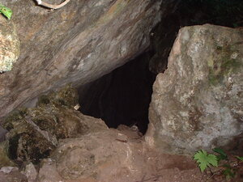
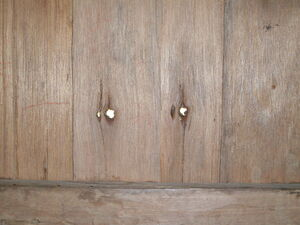
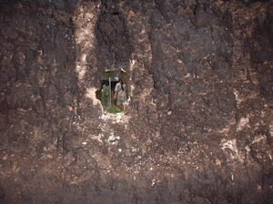

lungag   
/luŋag/
n.
“hole”
1.
n.
hole
Wrd.Gloss: hole
Due lungag te ambew diyè te lebut te kayu ne inlawed ku.
There is a hole of a rat there at the base of the tree which I left standing.
Syn. bitu
cf. leb-eng
Eng. hole; excavation
Tag. húkay
Ceb. bángag; lúngag
Ilo.: abút
OCM: Ethnophysics (822)
DDP: Underground (1.2.1.5)
Online dict status: -
Usage level: F
v.
for a person or animal (eglulungag, miglulungag/inlulungag, lulungag, agent, eg><ø-rdpCV-) to bore or punch a hole in something (e.g., cellophane, a balloon) (eglungahan, inlungahan/miglungahan/piglungahan, lungahan, location, eg><an-) with something sharp (iglungag, inlulungag, instrument, ig><ø-)
Eg-uyan a te pala ne iglungag ku te tanè ne egpamulaan ku te suli.
I will bring a shovel that I use to put holes in the earth where I plant gabi.
Eng. bore hole; punch hole; drill hole; make hole; hole, bore; hole, punch; hole, drill
DDP: Underground (1.2.1.5)
Online dict status: -
Usage level: M
v.
for something (egkalungahan, nalungahan, actor & patient, egkA><an-) to become holed
Egkalungahan ka alabat.
The wall will become holed.
Syn. butbut
Eng. holed, become; holes, get
DDP: Underground (1.2.1.5)
Online dict status: -
Usage level: M
adj.
(lungahen, -en) having many holes
Eng. many holes, having; holed; porous, be
DDP: Wet (1.3.3)
Online dict status: -
Usage level: R
2.
n.
a dimple
Eng. dimple
OCM: Ethnoanatomy (826)
DDP: Head (2.1.1)
Online dict status: -
Usage level: R
Updated by: RJH,NJK,NJK,QDL,NJK,RAA
Last updated: 26/Jan/2012
"lungag" in text "Cooking in Bamboo"
"lungag" in text "Making Lead Sinkers"
"eglungag" in text "Making Lead Sinkers"
"eglungag" in text "Making Lead Sinkers"
"lungag" in text "Making Lead Sinkers"
"lungag" in text "Making Lead Sinkers"
"lungag" in text "Making Lead Sinkers"
"lungag" in text "Making Lead Sinkers"
"lungag" in text "Making Lead Sinkers"
"lulungag" in healthbook "Migpamawian ni Inuk ka sumbaley rin ne migpangaliskis"
"nenalungahan" in healthbook "Eg-ay-ayaran ta ka me ngipen ta"
"eglulungag" in healthbook "Eg-ay-ayaran ta ka me ngipen ta"
"lulungag" in healthbook "Eg-ay-ayaran ta ka me ngipen ta"
"pakalulungag" in healthbook "Eg-ay-ayaran ta ka me ngipen ta"
This page last updated: 19/May/2012
Copyright © 2009-2010, Matigsalug Language Christian Association, Inc